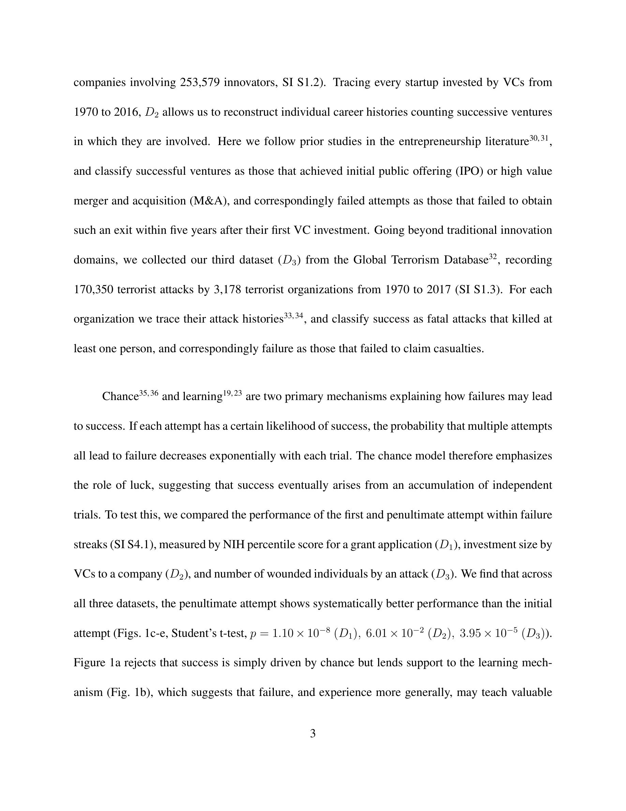

저자: Yian Yin, Yang Wang, James A. Evans, Dashun Wang | 날짜: 2019 | Journal: Nature | DOI: 10.1038/s41586-019-1725-y | arXiv: -

Figure 1
실패를 반복하는 사람들 중 결국 성공하는 사람과 그렇지 않은 사람을 어떻게 구별할 수 있는가? 이 논문은 NIH 연구비(139,091명), 스타트업(58,111개사), 테러 조직(3,178개)의 반복 시도 데이터를 분석하여 성공한 집단은 실패할 때마다 시도의 효율성이 개선되지만, 실패한 집단은 개선이 없다는 것을 밝혔다. 단순한 시도 횟수나 초기 역량이 아닌, 실패 사이에 무엇을 학습하는가가 결정적 차이다.
Figure 1
Figure 1: 실패 역학 모델 — 성공 집단과 실패 집단의 시도 간 효율성 궤적 비교
실패는 성공의 어머니라는 통념이 옳은지, 그리고 어떤 실패가 성공으로 이어지는지를 이해하는 것은 인재 발굴, 연구비 지원, 창업 생태계 설계에 직결된다. 조기에 학습 패턴을 진단하여 타깃형 지원을 제공할 수 있다.
| 항목 | 점수 |
|---|---|
| Novelty | 5/5 |
| Technical Soundness | 5/5 |
| Significance | 5/5 |
| Clarity | 5/5 |
| Overall | 5/5 |
총평: 실패 역학을 세 도메인에서 보편적으로 정량화하고 성공/실패 집단의 조기 구별 가능성을 보인 탁월한 연구로, 과학 정책과 인재 육성 전략에 중요한 함의를 갖는다.